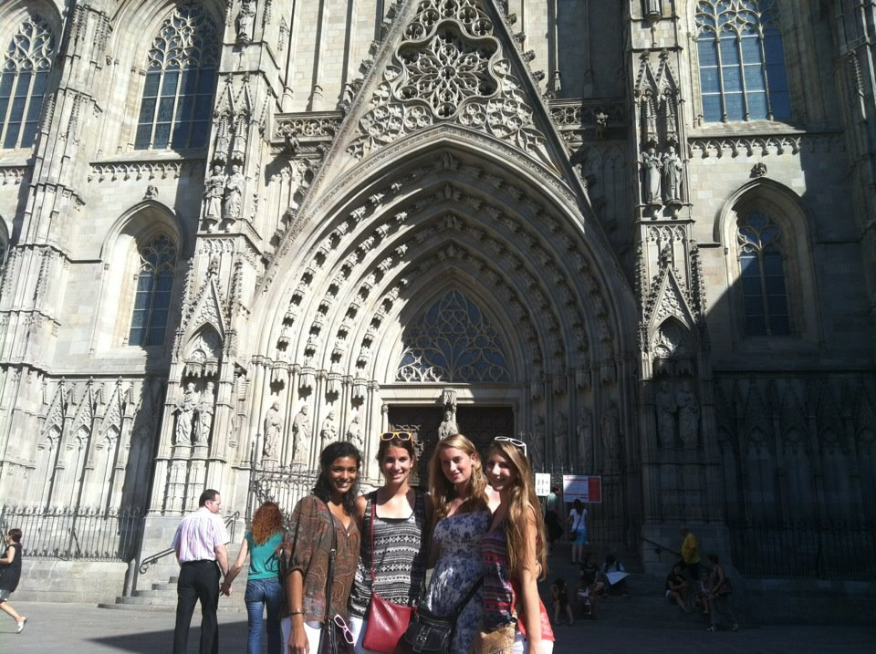
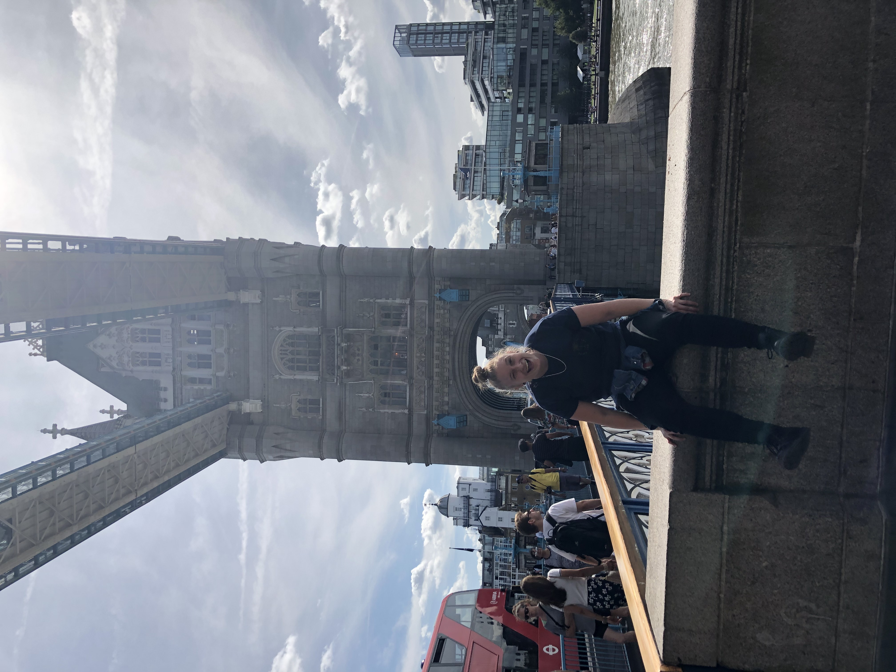
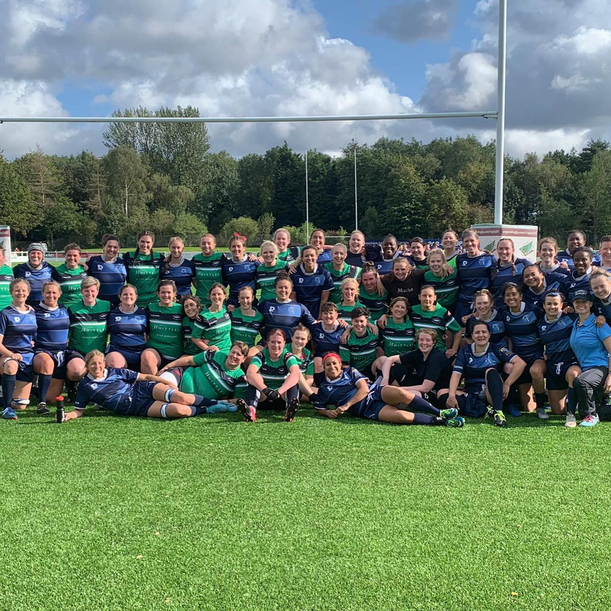
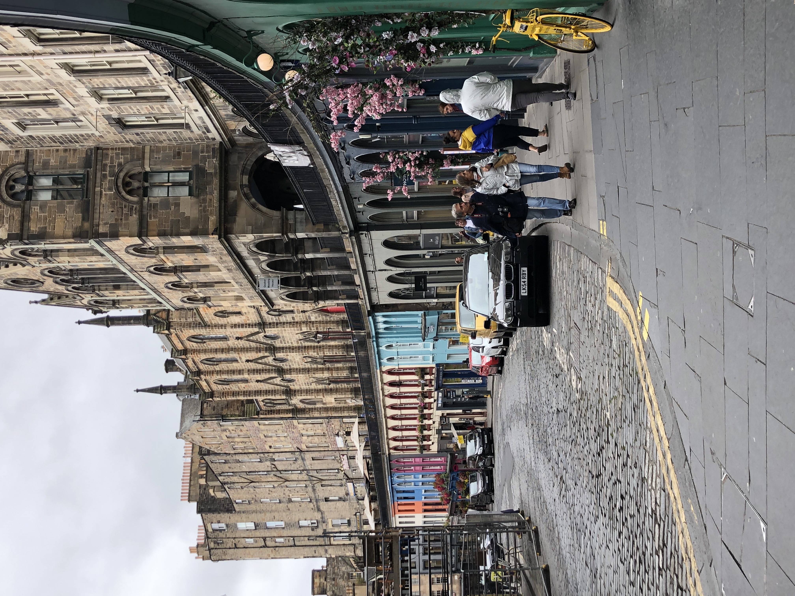
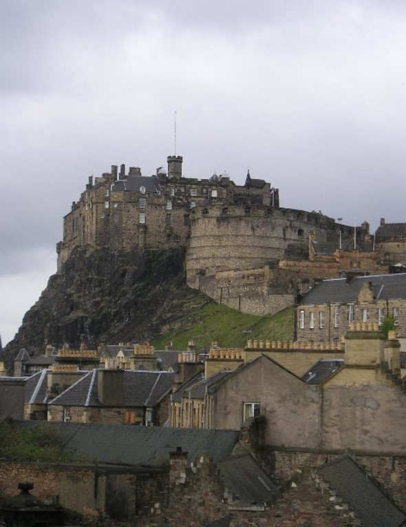
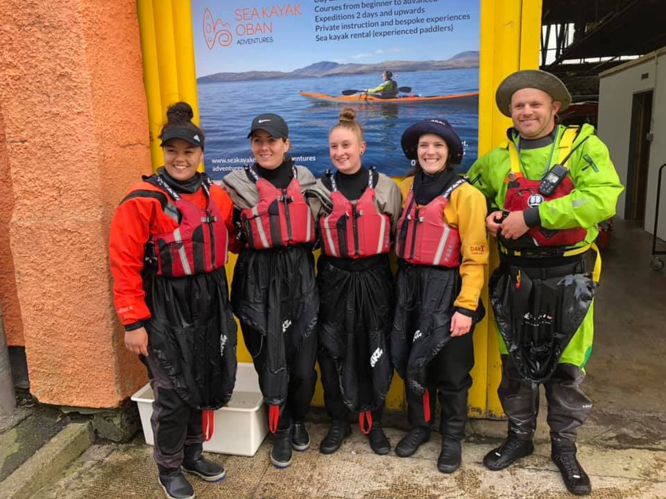

OVERSEAS TRAVEL
When I was in High School I got to travel abroad in Spain for a few weeks. It was 2012 and I was 17 at the time, I had never left the country before. To me this was the best experience ever. We traveled to 7 different cities and got see and experience so much about a different culture. Several years laters, 7 years to be exact, I visited the UK, a place I have always dreamed. both are trips I will never forget.
We landed in Malago, it is on the shoreline in souther Spain. When we got off the plane the first place we went was to a coffee shop and we took our coffees to the beach. From there we went to Granada, Sevilla, Cordoba, Pamplona, Madrid, and Barcelona. We went to several La Sagrada Familia, Alhambra, Park Guell, Casa Batllo, Casam Mila, the Gothic Quarter, Plaza Major, Mosque-Cathedral of Cordoba, and the Royal Palace of Madrid. We honestly went to so many places and saw so many things it would take a book to describe it all. However I still have two countries to talk about so I'll keep this short and say, I had a fantastic time and made memories for a lifetime.

My Classmates & I in front of an old Catedral in Sevilla
Just recently I traveled to England. I went int August of 2019 for Rugby. My rugby team was invited to come play in a tournament is Preston, England. Of course my team made it into a vacation as well and spent two weeks in England and Scotland. Upon arrival in England we started the journey in London were we were there for about 4 days before we traveled by train to Preston. We ended up taking first in the tournament and went undeafeated. My time in England was one for the books. Never did I think I would get to travel the UK with my rugby team and get to experience such a trip.

Tower Bridge in London, England
While in England not only did I get to experience playing internationally, I also got to experience their culture. Even though they speak English, life there is quite different. I was stunned by their transportation system in London, it is so intricate. I definetly got lost a few times trying to navigate around. While in Preston we got to really hagout with the other teams and hear about their lives in England and the other countries the teams were from. Though the teams were from all over the world and spoke different languages, rugby really brought us together and we all learned a lot from one another.

Rugby tournament in Preston, England
After Preston, England several of my teammates traveled with us to Scotland. We stayed in Edinburgh first and met up with another one of my teammates family. She is half Scottish, half Philipino an has family in Scotland. They showed us around Edinburgh the first day and left us with a list of places to go. Notice in the first image below it is a colorful street, this street is named Alley Victoria Street (below, top). This street was J.K. Rowlings inspiration for Diagon Alley. Interestingly enough Rowling got most of her Hogwarts inspiration came from Edinburgh. George Heriot's School and the Edinburgh Castle in the center of Edinburgh were the muse for Hogwarts. My Air BnB window was a perfect view of the Edinburgh Castle (below, bottom).


Alley Victoria Street & George Heriot's School in Edinburgh
After Edinburgh my one teammate and I rented a car and roadtripped around Scotalnd. We started out by going to the highlands. We went through Loch Lomand National Park, up along Loch Ness to Inverness. We stayed there for a night and traveled back down to Oban. In Oban we went sea kayaking and whiskey tasting. From there we went to Glasgow and met up with more teammates and stayed a few nights before we went back to London.

Sea Kayaking
Though my experiences in Spain and England were dreams come true, nothing competes with Scotland. I mean come on, sea kayaking?! It was amazing! I hope to one day travel more and keep expanding my life experiences and places.